| Livello di confidenza | \(\alpha\) | Fattore di copertura |
|---|---|---|
| 68.27% | 0.3173 | 1.0000 |
| 90% | 0.1000 | 1.6449 |
| 95% | 0.0500 | 1.9600 |
| 95.45% | 0.0455 | 2.0000 |
| 99% | 0.0100 | 2.5758 |
| 99.73% | 0.0027 | 3.0000 |
Misura, Incertezza, Taratura
Analisi Dati e Statistica, 2024–25

Paolo Bosetti
Università di Trento, Dipartimento di Ingegneria Industriale
Ultimo aggiornamento: 24/03/2025
Misura
Un’operazione di misura è alla base di qualsiasi creazione di valore ed è fondamentale in qualsiasi ambito scientifico e ingegneristico
Una misurazione può essere ottenuta con uno strumento più o meno “buono”
La “bontà” di uno strumento è precisamente definita come la sua incertezza, che è un termine statistico
Incertezza
Incertezza, precisione, accuratezza
- L’incertezza è l’inverso della precisione, a sua volta sinonimo di ripetibilità
- L’accuratezza è sinonimo di mancata polarizzazione
È meglio avere uno strumento preciso o accurato?
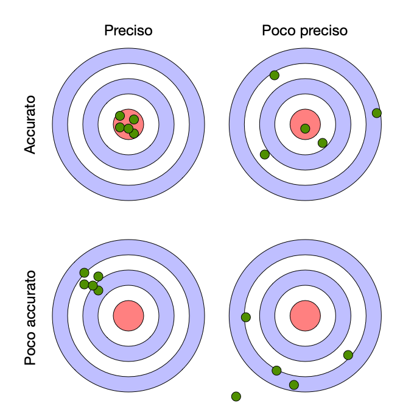
Norma UNI4546
Introdotta nel 1984, dà alcune definizioni:
Definizioni
- Misurazione: l’atto del misurare, assegnare valori numerici a grandezze fisiche
- Parametro: grandezza di un sistema fisico alla quale assegnare valori numerici
- Misurando: un parametro sottoposto a misurazione
- Misura: il risultato di una misurazione
- Metrologia: disciplina che riguarda la qualità delle misure
Norma UNI4546
Una misura, che è il risultato di una misurazione, rappresenta un parametro di un sistema considerato in un determinato stato
È una terna costituita da:
- un valore
- un’incertezza
- un’unità di misura
Ad esempio: la mia statura è 183±0.5 cm
Esistono due tipi di grandezze:
- estensive, per cui vale la somma (lunghezze, correnti elettriche, velocità)
- intensive, esprimono un ordine e non vale la somma (pressioni, temperatura)
Norma UNI4546
- Misurazione diretta: ottenuta per confronto diretto con un campione noto
- Misurazione indiretta: si misurano grandezze secondarie collegate a quella di interesse mediante un modello
Nel caso di misurazione indiretta, lo strumento di misura è basato su un trasduttore: un dispositivo che trasforma una grandezza fisica in ingresso in un’altra grandezza (es. forza in carica elettrica)
Un modello è un insieme di relazioni tra parametri descrivente le interazioni (m. statico) e possibilmente l’evoluzione nel tempo (m. dinamico) di un sistema
Un modello può essere analitico o numerico
Norma GUM (ISO/IEC 98-3:2008)
Guide to the expression of Uncertainty in Measurement è il riferimento normativo per la terminologia e i metodi di calcolo dell’incertezza nelle misurazioni
Secondo la GUM il risultato di una misurazione è una variabile aleatoria e va trattato in quanto tale
La GUM ha abolito i termini di errore (sostituito con incertezza) e di valore vero (sostituito con stima)
Cioè si assume che il valore vero di una grandezza non sia conoscibile: anche aumentando all’infinito la precisione di uno strumento, prima o poi si arriva a livello atomico, per cui vale il principio di indeterminazione di Pauli
Quindi, se non ha senso parlare di valore vero, allora non ha senso nemmeno parlare di errore di misura
Norma GUM (ISO/IEC 98-3:2008)
La GUM definisce:
Definizioni
- L’incertezza standard (standard uncertainty) \(u_x\) della variabile \(x\) come la deviazione standard del valor medio di \(x\): \[ u_x=\frac{s_x}{\sqrt{n}}=\sqrt{\frac{\sum_{i=1}^n(x_i-\bar x)^2}{n(n-1)}} \]
- L’incertezza relativa come rapporto tra l’incertezza standard e la media della variabile; è adimensionale e utile per confronti: \[ u_{x\mathrm{rel}}=\frac{u_x}{|\bar x|} \]
Norma GUM (ISO/IEC 98-3:2008)
Definizioni
Ricordando che l’intervallo di confidenza è definito come \[ P\left(-t_{n-1,\alpha/2}\leq\frac{|\bar x - \mu_0|}{s_x/\sqrt{n}}\leq t_{n-1,\alpha/2}\right) = 1-\alpha \] risulta che l’intervallo \(\bar x \pm t_{\alpha/2,n-1}u_x\) contiene il valore atteso di \(x\) con una confidenza \(1-\alpha\)
Quindi la GUM definisce anche:
- L’incertezza estesa come la semi-ampiezza dell’intervallo di confidenza su \(\bar x\):
\[ U_x=t_{\alpha/2,n-1}\frac{s_x}{\sqrt{n}}=t_{\alpha/2,n-1}u_x = k_{n-1}u_x \]
Il termine \(k_{n-1}\) è chiamato fattore di copertura, e dipende solo dalla dimensione del campione (è il quantile della distribuzione T di Student).
Fattore di copertura
Ricordare che per \(n>50\) i quantili della normale e della T di Student sono indistinguibili a livello pratico
Per questo motivo, per campioni sufficientemente grandi la GUM consente di adottare i fattori di copertura ricavati dai quantili di \(\mathcal{N}(0,1)\)
Salvo indicazioni, per esprimere una misura si usa sempre l’incertezza standard (27.5±0.1mm, in cui \(u_x=0.1\))
Se si usa l’incertezza estesa è necessario accompagnarla dal livello di confidenza (27.5±0.1mm al 95%)
Modello statico di uno strumento di misura
Nel caso di misurazioni indirette, è fondamentale disporre di un modello che descriva il comportamento del trasduttore, cioè la relazione tra uscita e ingresso
Ogni modello dipende da uno o più parametri numerici che devono essere identificati
Questa operazione di identificazione dei parametri del modello di misura si chiama taratura
La taratura punta a definire la correlazione \(y=f(m)\) tra l’ingresso misurando \(m\) e l’uscita del trasduttore \(y\), e la relativa incertezza. La \(f(\cdot)\) è detta caratteristica statica dello strumento
D’ora in avanti considereremo solo il caso di sistemi statici, cioè in stato stazionario, per i quali il tempo non è una variabile di modello
I sistemi dinamici verranno presi in considerazione nel secondo modulo di questo corso
Taratura
Uno strumento fornisce la misura mediante inversione della caratteristica statica: \(m=f^{-1}(y)\)
Perché la \(f(\cdot)\) sia nota è necessario identificarne i parametri mediante regressione
La regressione viene effettuata a partire da una serie di coppie \((m_i, y_i)\) ottenute:
- da una serie di misurandi noti \(m_i\)
- da una serie di misurazioni \(y_i\) ottenute con uno strumento di qualità migliore di quello in taratura
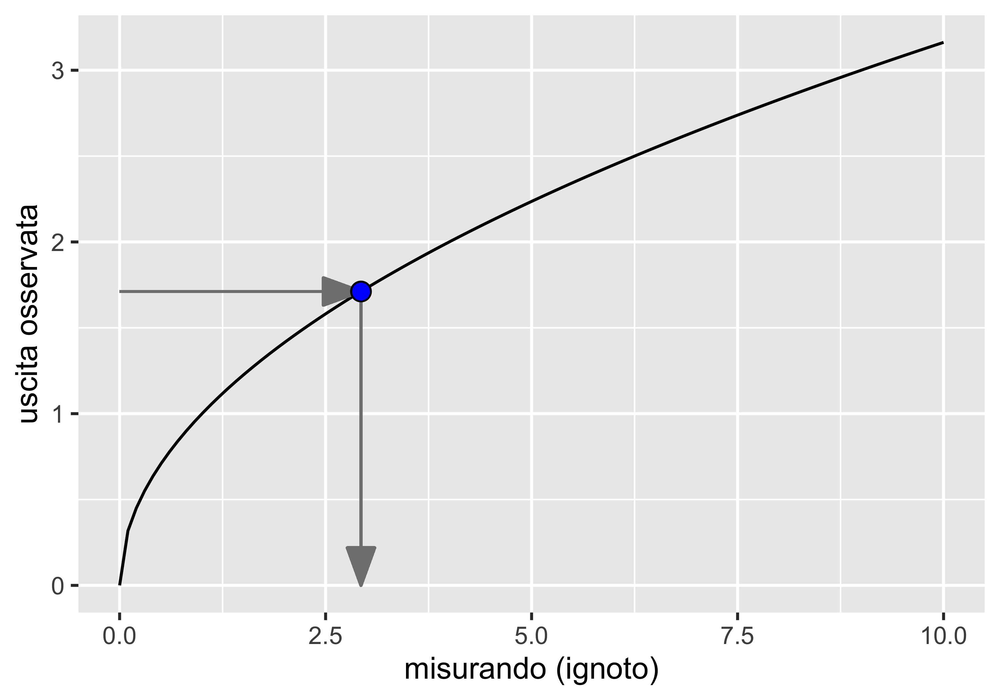
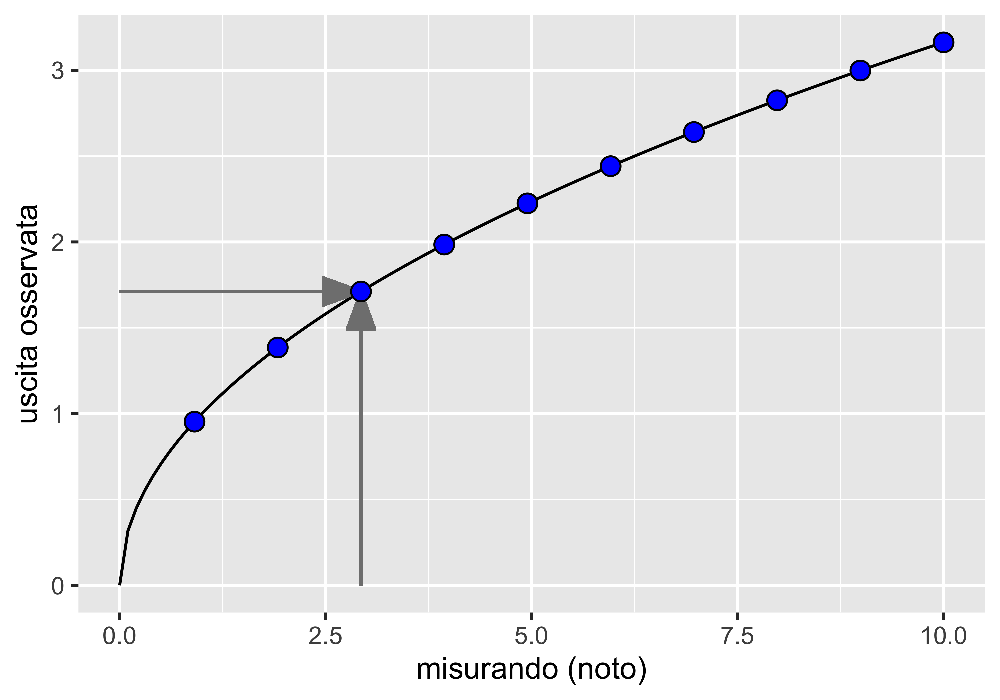
Taratura
Una taratura statica si sviluppa quindi su quattro passaggi:
- sviluppo del modello dello strumento: mediante analisi dei principi fisici si definisce la caratteristica statica come relazione (analitica, numerica o mista) tra ingresso e uscita. Idealmente, un modello completo comprende anche gli ingressi di disturbo
- raccolta dei dati di taratura: una campagna sperimentale fornisce le coppie \((m_i, y_i)\), che vanno raccolte con \(m\) in ordine casuale
- regressione: si identificano i parametri del modello
- validazione del modello: si verifica l’adeguatezza del modello regredito mediante analisi dei residui
La taratura deve anche definire l’incertezza dello strumento, dovuta:
- al modello (la forma della caratteristica statica)
- ai parametri del modello
- alla stima del misurando (dovuta a ingressi di disturbo)
Ingressi di disturbo
Gli ingressi fonte di incertezza possono essere:
- ingressi modificanti: modificano la caratteristica statica, per cui ad uno stesso valore di \(m\) possono corrispondere diversi valori di \(y\) per via di un cambiamento della forma di \(f(\cdot)\) o del valore dei parametri (ad es. effetto della temperatura)
- ingressi interferenti: si sommano direttamente all’uscita dello strumento, per cui \(y=f(m)+y_d\), e hanno tipicamente un carattere stocastico (ad es. vibrazioni, disturbi elettrici)
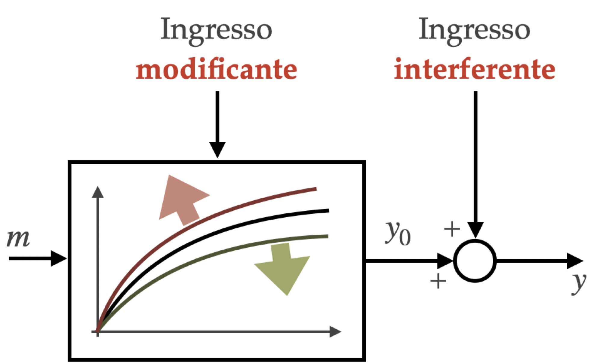
Esempio: dinamometro a mensola
È uno strumento per la misura della forza peso che sfrutta:
- l’elasticità di una trave snella per convertire una forza in una deformazione
- un estensimetro per convertire una deformazione in una variazione di resistenza
- un circuito elettrico con voltmetro per convertire la variazione di resistenza in variazione di corrente, mediante amplificazione
Il modello dello strumento fornisce:
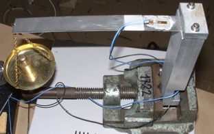
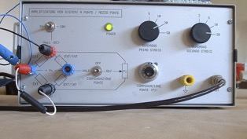
\[ V=3/2GV_i\frac{lG_F}{EBH^2}F+V_0 = V_0+ KF \]
Esempio: dinamometro a mensola
La caratteristica statica dello strumento dipende, oltre che dal misurando \(F\), da altri 8 parametri
Per effettuare la taratura si tengono il più possibile costanti tutti i parametri, eccetto il misurando
I parametri che non è possibile mantenere costanti si accetta che fluttuino, ripetendo le misurazioni e mediando i risultati: si parla di controllo statistico del processo di taratura, che mitiga l’effetto degli ingressi interferenti
È la condizione in cui si applica il teorema del limite centrale
Gli ingressi modificanti sono più complessi da trattare e richiedono una modifica del modello e il passaggio da uno strumento di misura a un sistema di misura
Ad esempio, la temperatura può influire su tutti i parametri della caratteristica statica: se affianco uno strumento di misura della temperatura e arricchisco il modello con la dipendenza dalla temperatura, posso compensare l’effetto degli ingressi modificanti
Casualizzazione della sequenza di taratura
Compensare l’effetto degli ingressi modificanti durante la taratura può non essere semplice o economico
Se però raccolgo le coppie \((m_y, y_i)\) in ordine casuale anziché in ordine di \(m_i\), ottengo il risultato di distribuire casualmente l’effetto degli ingressi modificanti
In questo modo trasformo gli ingressi modificanti in ingressi interferenti, dei quali posso mitigare l’effetto mediante controllo statistico
Confrontiamo ora la taratura del dinamometro a mensola effettuata senza casualizzazione e con casualizzazione, nel caso di un ingresso modificante (la temperatura) non preso in considerazione dall’operatore
Taratura del dinamometro (senza casualizzazione)
Nel laboratorio di taratura, dopo 4 ore dall’inizio del processo di taratura, il termostato viene modificato e la temperatura comincia a variare tra 20°C e 25°C
L’addetto alla calibrazione non si accorge del cambiamento né registra la temperatura
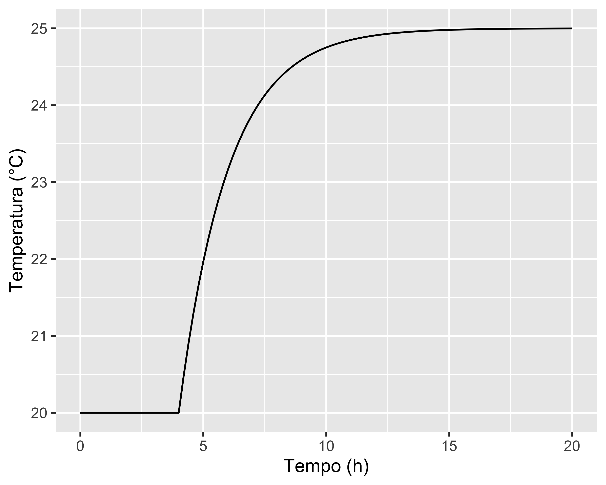
Taratura del dinamometro (senza casualizzazione)
L’addetto registra la tensione in uscita in corrispondenza di 50 valori di forza applicati, variabili tra 10 N e 100 N, in ordine crescente della forza
Dato che il modello dello strumento prevede una relazione lineare \(V=V_0+KF\), l’addetto effettua una regressione lineare
Lo studio dei residui però evidenzia un pattern con un minimo, per cui l’addetto sospetta un sotto-adattamento e quindi tenta una seconda regressione con un modello quadratico
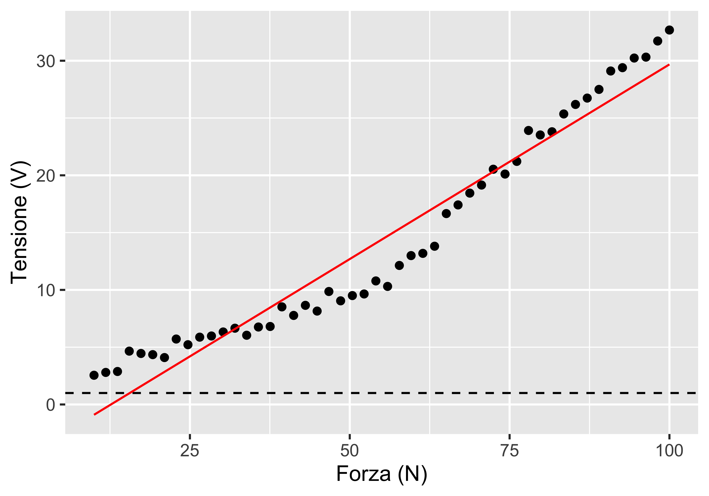
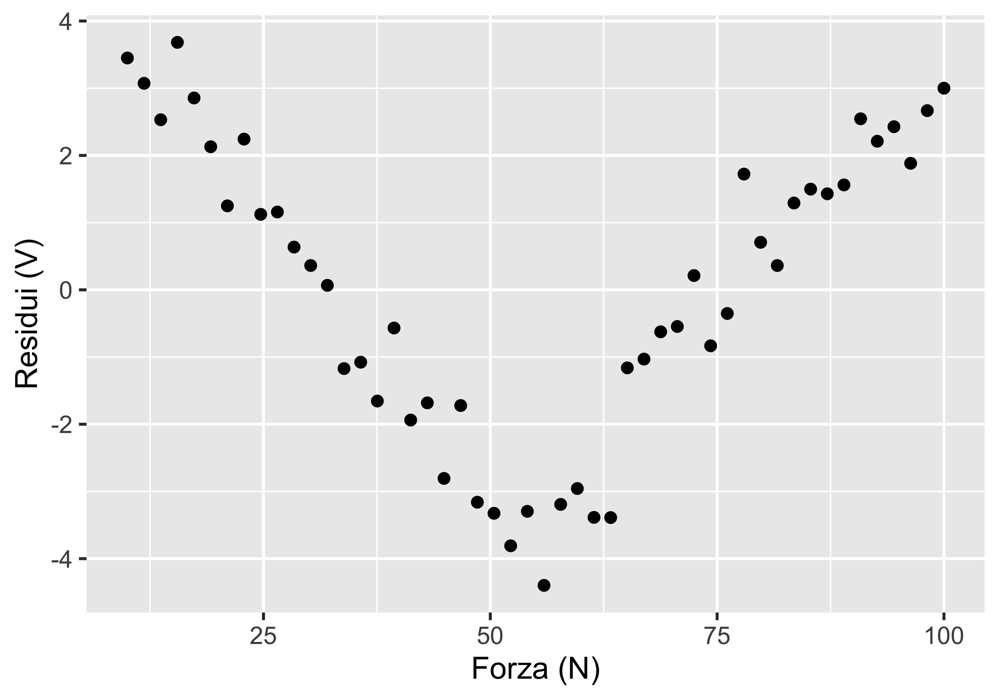
Taratura del dinamometro (senza casualizzazione)
L’addetto verifica quindi una regressione con un modello di secondo grado
L’analisi dei residui lo soddisfa e quindi accetta la nuova caratteristica statica tarata come un polinomio di secondo grado
Nota: questa caratteristica ha perso la relazione con la fisica del problema ed è quindi puramente empirica
Tuttavia, dato che la variazione di temperatura non è stata registrata né notata, l’addetto non ha modo di accorgersi che la caratteristica così tarata è ovviamente sbagliata e in pratica inutilizzabile
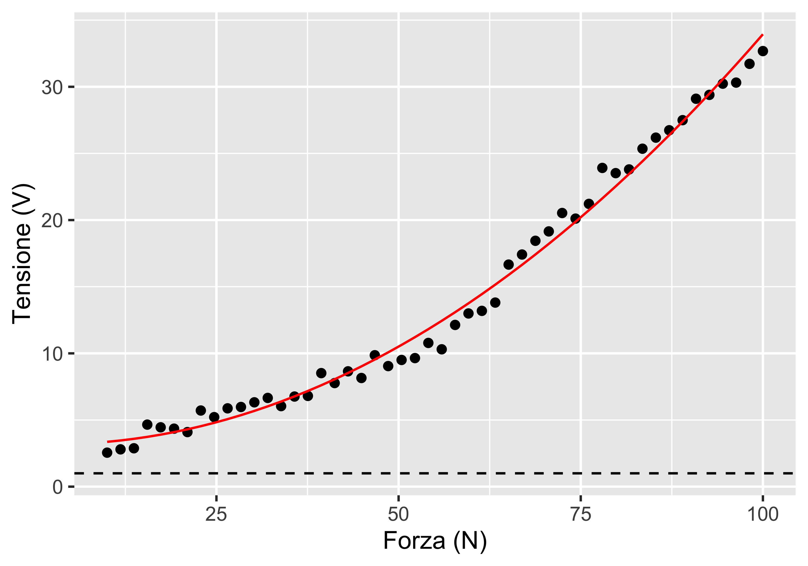
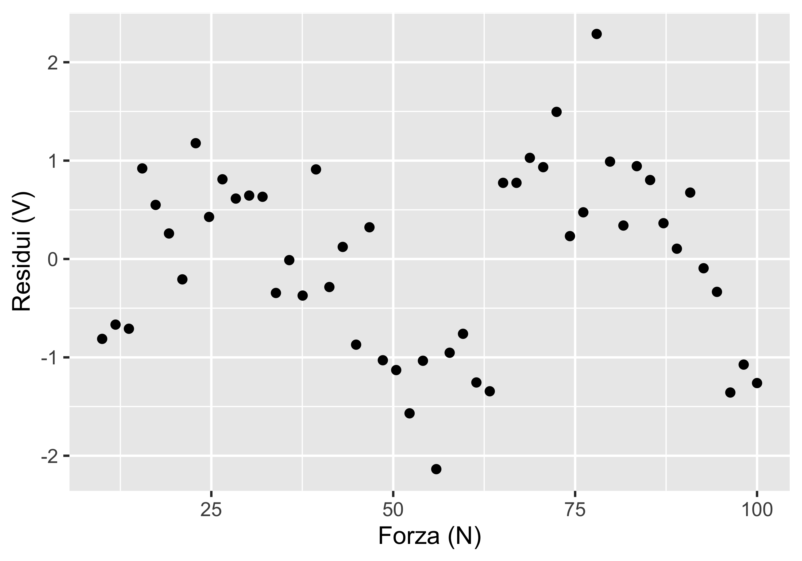
Taratura del dinamometro (con casualizzazione)
Rivediamo cosa sarebbe successo raccogliendo le coppie \((m_i,y_i)\) in ordine casuale
In questo caso l’effetto di aumento della temperatura è nullo sulle coppie raccolte (con valori casuali di \(m_i\)!) prima di 4 ore; successivamente questo effetto si distribuisce casualmente su tutti i valori del misurando (diventa un ingresso interferente)
La regressione lineare di primo grado questa volta è adatta, anche se la varianza non è costante
Tuttavia, osservando i residui in funzione del tempo si nota che a circa 4 ore inizia a succedere qualcosa che fa aumentare i residui
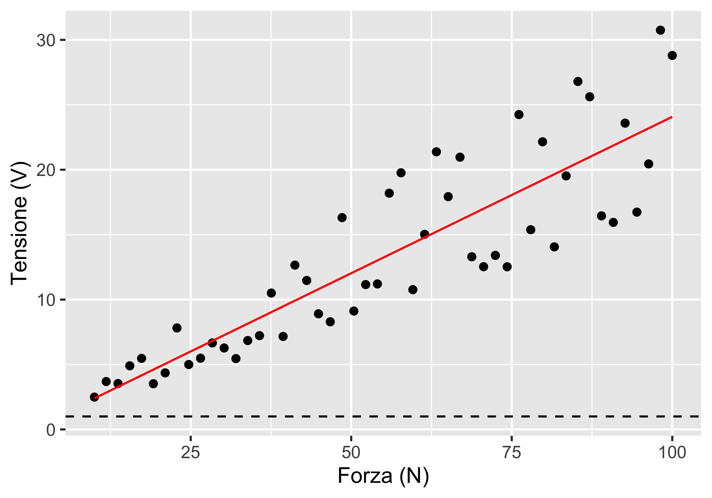
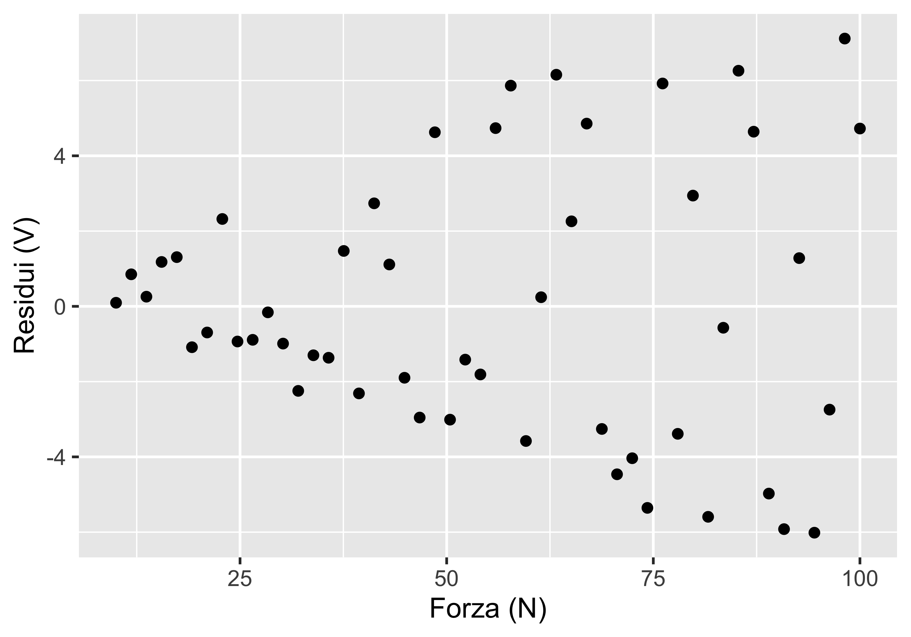
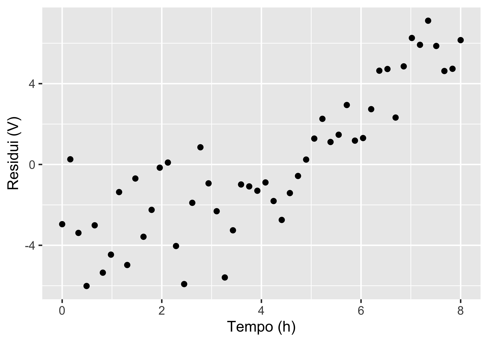
Taratura del dinamometro (con casualizzazione)
Se variamo il colore dei punti in funzione del tempo in cui sono state effettuate le singole prove, osserviamo che c’è una fascia di punti in basso con andamento lineare e varianza costante, tutti raccolti a meno di 4 ore dall’inizio
Scartando dalla regressione tutti i punti raccolti dopo 4 ore, otteniamo una regressione lineare con residui stretti e regolari
La caratteristica statica così identificata rappresenta correttamente il comportamento dello strumento a 20°C
Propagazione dell’incertezza
In certi casi è necessario valutare l’incertezza di una misura derivata, cioè costruita per combinazione di altre misure
Basi
Supponiamo di voler misurare la velocità media di un veicolo in un tratto di strada
Possiamo esprimere la velocità come rapporto tra la distanza percorsa \(d\) e il tempo impiegato \(t\): \[ v=\frac{d}{t} \] Sia la misura di distanza che quella di tempo sono accompagnate da una loro incertezza standard
Qual è l’incertezza standard sulla misura indiretta di velocità?
Secondo la GUM può essere determinata in due modi:
- analitico, mediante la legge di propagazione dell’incertezza
- numerico, mediante il metodo Monte Carlo
Metodo analitico
Sia \(y=f(x_1,x_2,\dots,x_n)\): vogliamo esprimere l’incertezza tipo combinata note che siano le \(u_1,u_2,\dots,u_n\)
Esprimiamo la variazione di \(y\) in un intorno di \(x_0\) mediante sviluppo in serie di Taylor per una sola variabile \(x\): \[ f(x_0+\Delta x)=f(x_0)+\frac{df}{dx}\Delta x + \frac{d^2f}{dx^2}\frac{\Delta x^2}{2!} + \frac{d^3f}{dx^3}\frac{\Delta x^2}{3!}+o(\Delta x^3) \] Nel caso di \(n\) variabili, e arrestandosi al termine di primo grado: \[ \begin{align} y =&f(x_1,x_2,\dots,x_n) \\ \simeq&f\left( \bar x_1 + \Delta x_1, \bar x_2 + \Delta x_2, \dots, \bar x_n + \Delta x_n \right) \\ =& f(\bar x_1, \bar x_2,\dots,\bar x_n) + \sum_{i=1}^n \frac{\partial f}{\partial x_i}(x_i-\bar x_i) \end{align} \]
Metodo analitico
Si noti che: \[ \begin{align} E(y) &= E\left(f(\bar x_1, \bar x_2, \dots, \bar x_k) + \sum_{i=1}^k \frac{\partial f}{\partial x_i} (x_i - \bar x_i)\right) \\ &= E(f(\bar x_1, \bar x_2, \dots, \bar x_k)) + \sum_{i=1}^k \frac{\partial f}{\partial x_i} E(x_i - \bar x_i) \\ &= f(\bar x_1, \bar x_2, \dots, \bar x_k) \end{align} \] cioè il valore medio di \(f(\cdot)\) è la stessa funzione applicata ai valori medi: \(\bar y=f(\bar x_1, \bar x_2,\dots,\bar x_k)\)
Metodo analitico
Possiamo quindi scrivere che: \[ \begin{align} E(y - f(\bar x_1, \bar x_2, \dots, \bar x_k)) &= E\left(\sum_{i=1}^k \frac{\partial f}{\partial x_i} (x_i - \bar x_i) \right) \\ u^2_y=E((y-\bar y)^2) &= E\left(\left(\sum_{i=1}^k \frac{\partial f}{\partial x_i}(x_i - \bar x_i)\right)^2\right) \\ u_y^2 &= \sum_{j=1}^k\sum_{i=1}^k \frac{\partial f}{\partial x_i}\frac{\partial f}{\partial x_j}u_{i,j}^2 \end{align} \] dove \(u_{i,j}\) è la covarianza \(u_{i,j}=\textrm{Cov}(x_i, x_j)=E((x_i-\bar x_j)(x_j - \bar x_i))\)
Metodo analitico
Nel caso in cui le \(x_i\) siano tutte indipendenti, cioè \(u_{i,j}=0~\forall i\neq j\), vale la relazione semplificata: \[ u_y = \sqrt{\sum_{i=1}^n \left(\frac{\partial f}{\partial x_i}\right)^2 u_i^2} \] nota come legge di propagazione delle incertezze
Le derivate parziali che compaiono nella LPI sono dette coefficienti di sensibilità e vanno valutati nel valore medio della rispettiva variabile \(x_i\).
Il valore dei coefficienti di sensibilità consente di determinare quale delle misure combinande contribuisce maggiormente all’incertezza della misura combinata
Volendo migliorare la misura combinata conviene investire soprattutto sulle misure combinande con un maggiore coefficiente di sensibilità
Esempio: volume di un cilindro
Siccome \(V=\pi r^2l\) vogliamo calcolare l’incertezza standard sul volume di un cilindro, note che siano le incertezze standard su raggio, \(u_r\), e lunghezza, \(u_l\)
Entrambe le incertezze sono calcolate da un campione di 20 elementi, entrambi con deviazione standard 2.24 mm: \(u=s/\sqrt{n} = 2.24/\sqrt{20} = 0.5~\mathrm{mm}\)
\[ u_V=\sqrt{\left(\frac{\partial V}{\partial r}\right)^2u_r^2 + \left(\frac{\partial V}{\partial l}\right)^2u_l^2 }= \pi \bar r \sqrt{4\bar l^2 u_r^2+\bar r^2 u_l^2} \]
Nel caso in cui sia \(r=\) 120.0±0.5 mm e \(l=\) 450.0±0.5, l’incertezza tipo combinata risulta pari a: \[ \begin{align} u_V&=&\pi 120\sqrt{4\cdot 450^2\cdot 0.5^2+120^2\cdot 0.5^2} \\ &=&171\times10^3~\mathrm{ mm^3}\simeq2 \times 10^5~\mathrm{mm^3} \end{align} \] e quindi il volume misurato è: \[ V=\pi \cdot 120^2 \cdot 450 = (20.4\pm0.2)\times 10^6~\mathrm{mm^3}= (20.4\pm0.2)~\mathrm{l} \]
Metodo Monte Carlo
Se la relazione \(y=f(x_1,x_2,\dots, x_n)\) non è differenziabile oppure non è nota in forma analitica (ma solo numerica), allora la LPI non è applicabile
In questo caso la GUM prevede l’applicazione di un metodo numerico noto come Monte Carlo, perché, come alla roulette, prevede la generazione di numeri casuali per simulare una distribuzione:
- si genera un elevato (\(\geq10000\)) numero di n-uple \(x_1,x_2,\dots, x_n\), generando per ogni \(x_i\) un numero casuale da una distribuzione rappresentativa del caso reale
- si applica la \(y=f(x_1,x_2,\dots, x_n)\) a ciascuna n-upla, generando altrettanti valori di \(y\)
- si studia la distribuzione empirica delle \(y\) così generate, calcolando l’intervallo di confidenza mediante il metodo dei quantili
Esempio: volume di un cilindro
Primo passo: generazione dei campioni delle misure di raggio e lunghezza
Dopo uno studio della tecnologia di produzione del cilindro, si accerta che
- la distribuzione del raggio è simmetrica, con media 120.0 mm e deviazione standard 0.5 mm
- la distribuzione della lunghezza è gobba, con media 450.0 mm e deviazione standard 0.5 mm
Si generano due campioni da 10 000 elementi ciascuno
Dato che generiamo un’elevata quantità di campioni, secondo la GUM assumiamo che l’incertezza standard coincida con la deviazione standard
Esempio: volume di un cilindro
Secondo passo: calcolo del campione di misure derivate di volume
Si applica semplicemente la \(V=\pi r^2l\) a ciascuna coppia \((r,l)\) generando altrettanti valori di \(V\)
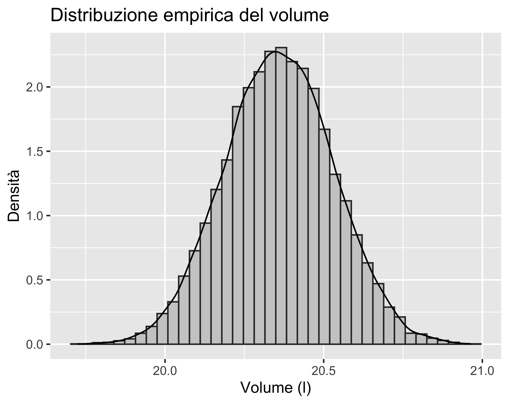
Esempio: volume di un cilindro
Terzo passo: valutazione della distribuzione e calcolo dell’incertezza derivata
La media e la deviazione standard dei volumi calcolati corrispondono al valore atteso e all’incertezza standard sulla misura di volume
Considerando un’unica cifra significativa per l’incertezza e arrotondando la media alla stessa risoluzione, si ottiene \[ V=(20.4\pm0.2)~\mathrm{l} \]
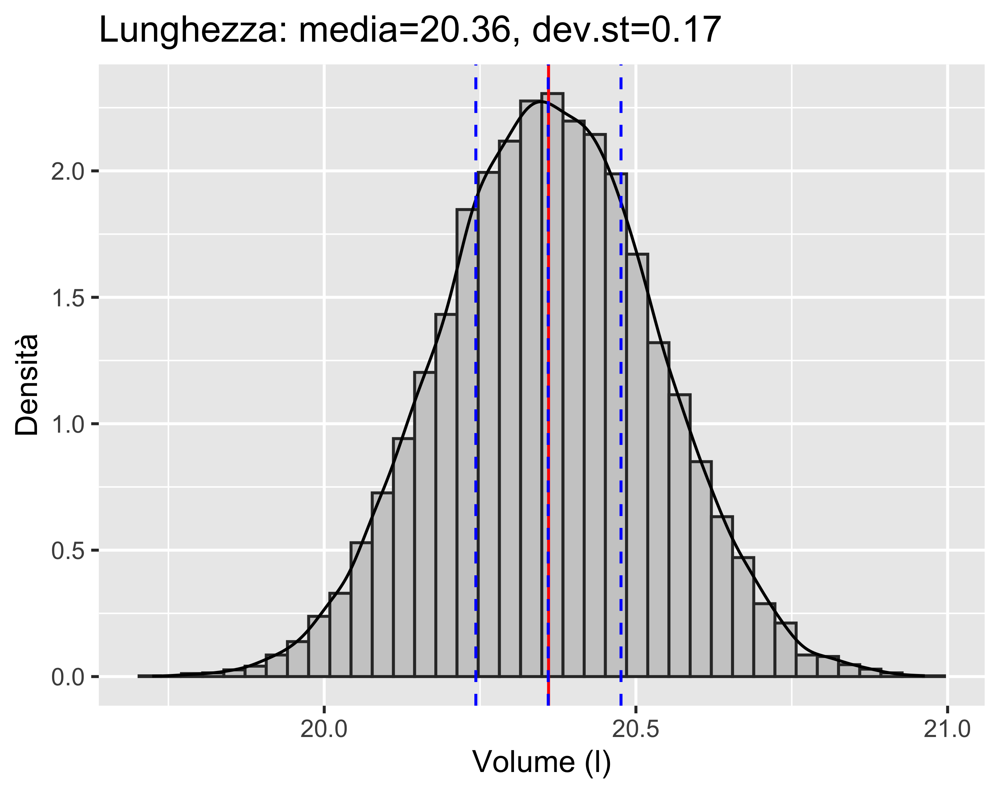
paolo.bosetti@unitn.it — https://paolobosetti.quarto.pub/ADAS